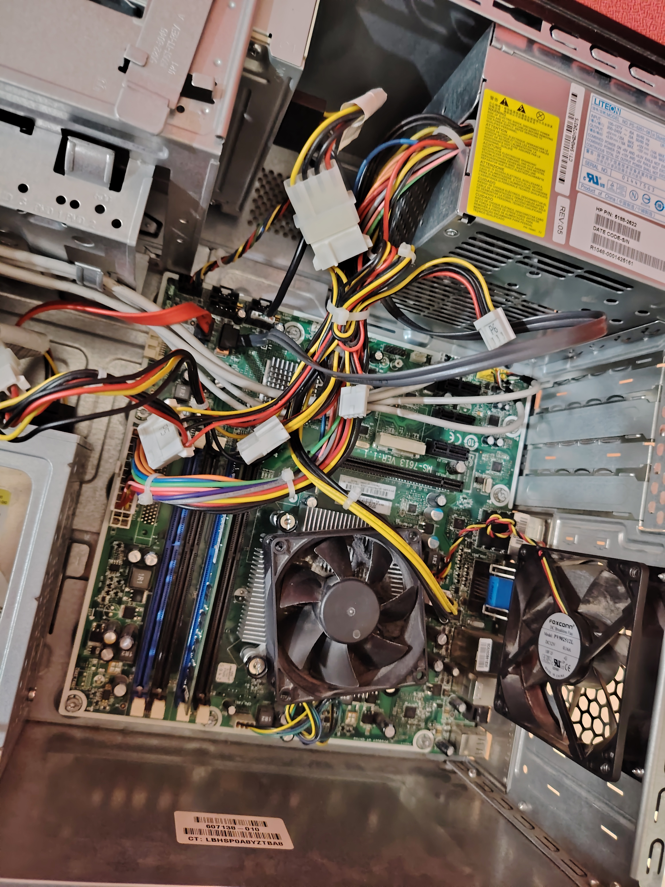
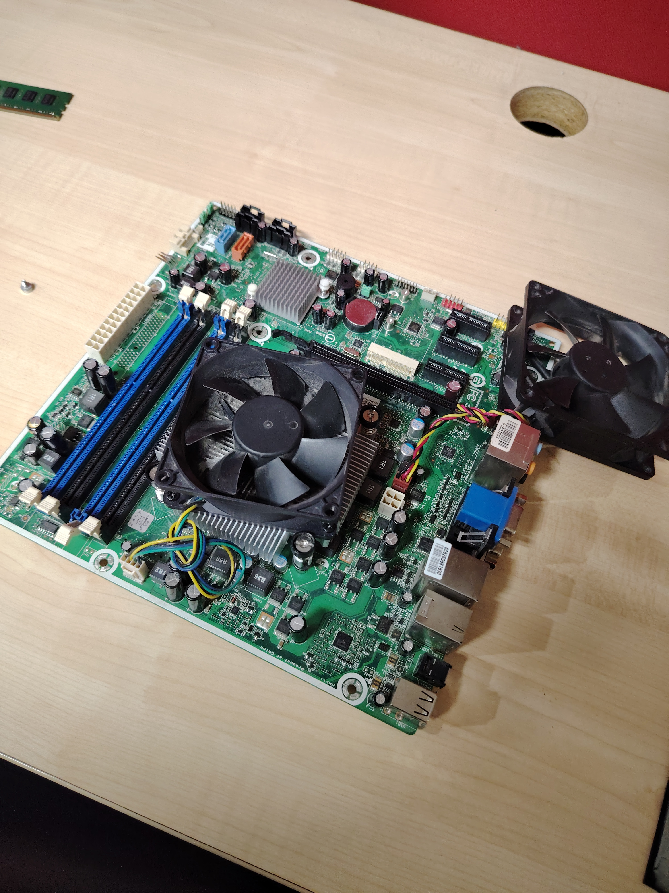
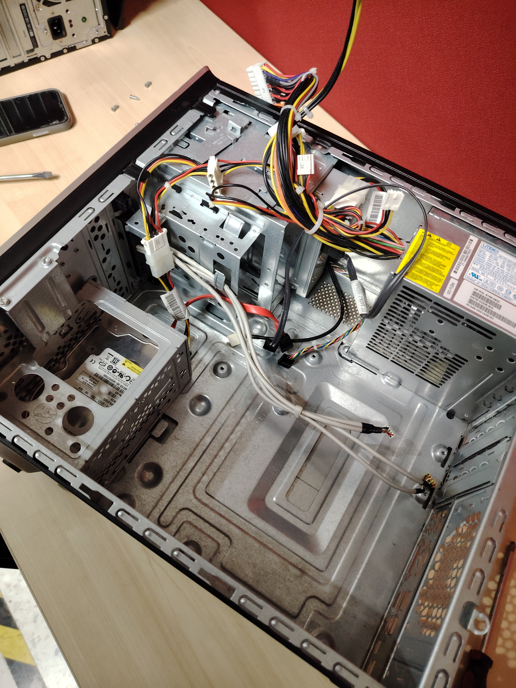
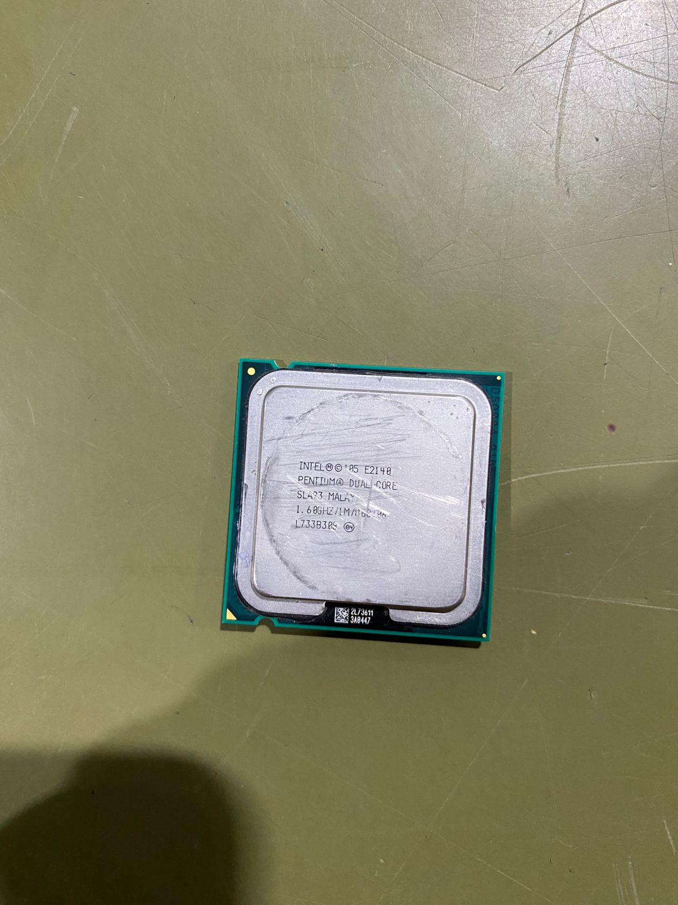
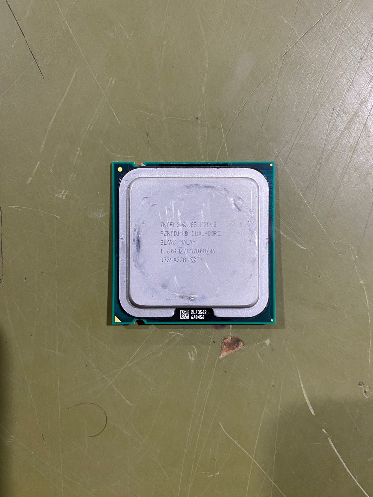

Unidad 1: Arquitectura de Computo
- 1.1 Modelos de Arquitectura
- 1.1.1 Clásicos
- 1.1.2 Segmentadas
- 1.1.3 De multiprocesamiento
- 1.2 Análisis de los componentes
- 1.2.1 Arquitecturas
- 1.2.1.1 Unidad Central de procesamiento
- 1.2.1.2 Unidad Aritmética Lógica
- 1.2.1.3 Registros
- 1.2.1.4 Buses
- 1.2.2 Memoria
- 1.2.2.1 Conceptos básicos del manejo de memoria
- 1.2.2.2 Memoria principal
- 1.2.2.3 Memoria cache
- 1.2.3 Manejo de la entrada/salida
- 1.2.3.1 Módulos de entrada/salida
- 1.2.3.2 Entrada/Salida programada
- 1.2.3.3 Entrada/Salida mediante interrupciones
- 1.2.3.4 Acceso directo de memoria
- 1.2.3.5 Canales y procesadores de entrada/salida
- 1.2.4 Buses
- 1.2.4.1 Tipos de buses
- 1.2.4.2 Estructura de buses
- 1.2.4.3 Jerarquías de buses
- 1.2.5 Interrupciones
Unidad 2: Estructura y Funcionamiento de la Unidad Central de Procesamiento
- 2.1 Organización del procesador
- 2.2 Estructura de registros
- 2.2.1 Registros visibles para el usuario
- 2.2.2 Registros de control y estados
- 2.2.3 Ejemplos de CPUs
- 2.3 El ciclo de la interrupción
- 2.3.1 Ciclo Fetch-Decode-Execute
- 2.4 Segmentación de instrucciones
- 2.5 Conjunto de instrucciones
Unidad 3: Selección de Componentes para Ensamble de Equipo de Cómputo
- 3.1 Chipset
- 3.1.1 Unidad central de procesamiento
- 3.1.2 Controlador de bus
- 3.1.3 Puertas de entrada/salida
- 3.1.4 Controlador de interrupciones
- 3.1.5 Controlador de acceso directo a memoria
- 3.1.6 Circuitos de temporización
- 3.1.7 Circuitos de control
- 3.1.8 Controlador de Video
- 3.2 Aplicaciones
- 3.2.1 Entrada salida
- 3.2.2 Almacenamiento
- 3.2.3 Fuentes de Alimentación
- 3.3 Ambientes de servicio
- 3.3.1 Negocio
- 3.3.2 Industria
- 3.3.3 Comercio electrónico
Unidad 4: Procesamiento Paralelo
- 4.1 Aspectos básicos de la computación paralela
- 4.2 Tipos de computación paralela
- 4.2.1 Clasificación
- 4.2.2 Arquitectura de computadoras secuenciales
- 4.2.3 Organización de dirección de memoria
- 4.3 Sistemas de memoria multiproceso
- 4.3.1 Redes de interconexión dinámica
- 4.4 Sistemas de memoria distribuida
- 4.4.1 Redes de interconexión estáticas
- 4.5 Casos para estudio
Imágenes






